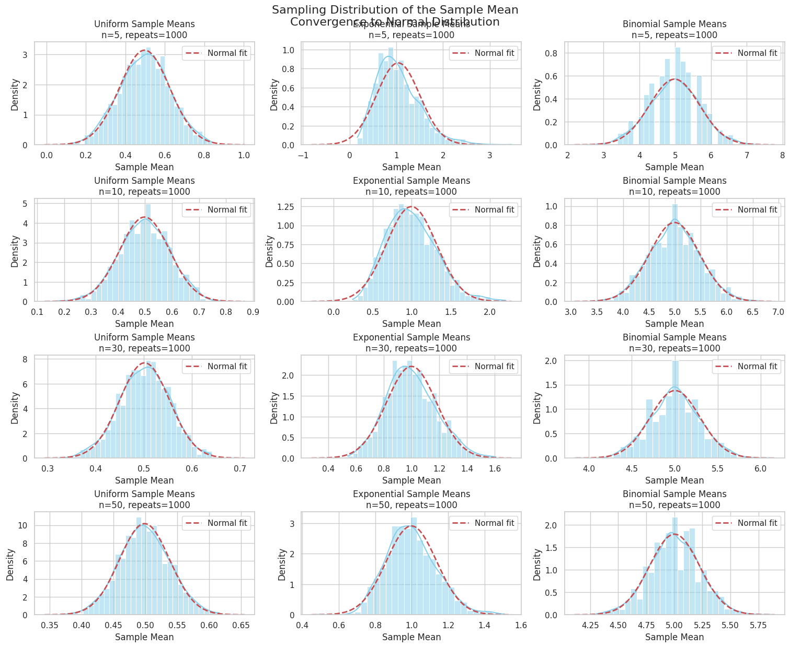

Problem 1
Data Generation in Statistical Analysis
Data generation is a foundational step in statistical modeling and simulation. Selecting appropriate population distribution types and generating large datasets representative of those populations is crucial for valid inference.
Population Distributions
Consider three common types of population distributions:
1. Uniform Distribution
A continuous uniform distribution on the interval \([a, b]\) has the probability density function (PDF):
The cumulative distribution function (CDF) is:
To generate a dataset \(\{X_i\}_{i=1}^n\) from a uniform distribution, sample \(n\) independent observations where
2. Exponential Distribution
The exponential distribution is often used to model waiting times and has PDF:
where \(\lambda\) is the rate parameter. The CDF is:
Generate \(n\) samples from
3. Binomial Distribution
The binomial distribution models the number of successes in \(n\) independent Bernoulli trials, each with success probability \(p\).
The probability mass function (PMF) is:
To generate data,
where \(m\) is the number of generated observations.
Generating Large Datasets
Given a selected population distribution, generate a large dataset to approximate the population:
- Fix distribution parameters (e.g., \(a,b\) for uniform, \(\lambda\) for exponential, \(n,p\) for binomial).
- Select a sample size \(N\) sufficiently large to represent the population well.
- Use random number generation methods to simulate:
This process provides a simulated population for analysis.
Summary
| Distribution | Parameters | Support | PDF / PMF |
|---|---|---|---|
| Uniform | \(a, b\) | \([a,b]\) | \(f_X(x) = \frac{1}{b - a}\) |
| Exponential | \(\lambda > 0\) | \([0, \infty)\) | \(f_X(x) = \lambda e^{-\lambda x}\) |
| Binomial | \(n \in \mathbb{N}\), \(p \in [0,1]\) | \(\{0,\ldots,n\}\) | \(P(X=k) = \binom{n}{k} p^k (1-p)^{n-k}\) |
Example: Generating Data
Suppose we want to generate \(N=10,000\) samples from a uniform distribution on \([0,1]\):
Similarly, for exponential with \(\lambda=2\):
And binomial with \(n=10\), \(p=0.5\):
This framework allows for robust simulation of population data across multiple distribution types, fundamental for subsequent statistical analysis and inference.
Sampling Process and Sampling Distribution of the Sample Mean
Sampling from a population distribution is the core of inferential statistics. This process involves drawing samples of various sizes, calculating sample statistics, and understanding their behavior through repeated sampling.
1. Sampling from Population Distributions
Given a population distribution with random variable \(X\), we draw samples of size \(n\):
where \(F_X\) denotes the population distribution (e.g., Uniform, Exponential, Binomial).
Typical sample sizes considered are:
2. Sample Mean
For each sample of size \(n\), the sample mean \(\bar{X}_n\) is calculated as:
The sample mean \(\bar{X}_n\) is a random variable itself because it depends on the randomly drawn sample.
3. Repeated Sampling and Sampling Distribution
To understand the variability and distribution of the sample mean, repeat the sampling process \(M\) times:
where each \(\bar{X}_n^{(j)}\) is the mean of the \(j\)th sample of size \(n\).
This collection forms the sampling distribution of the sample mean for sample size \(n\).
4. Properties of the Sampling Distribution
By the Law of Large Numbers and Central Limit Theorem (CLT), for sufficiently large \(n\):
- The expected value of the sample mean equals the population mean \(\mu\):
- The variance of the sample mean is:
where \(\sigma^2\) is the variance of the population.
- As \(n \to \infty\), the distribution of \(\bar{X}_n\) approaches a normal distribution:
5. Practical Steps in the Sampling Process
- Randomly sample \(n\) observations from the population \(X\).
- Calculate the sample mean \(\bar{X}_n\).
- Repeat steps 1 and 2, \(M\) times (e.g., \(M = 1000\)).
- Construct the sampling distribution of \(\bar{X}_n\) by collecting all sample means.
This process allows us to empirically estimate the shape, mean, and variance of the sampling distribution.
6. Summary of Notation
| Symbol | Meaning |
|---|---|
| \(X_i\) | \(i\)th observation from the population |
| \(n\) | Sample size |
| \(\bar{X}_n\) | Sample mean for sample size \(n\) |
| \(M\) | Number of repeated samples (resamples) |
| \(\mu\) | Population mean |
| \(\sigma^2\) | Population variance |
Example: Sampling from a Uniform Population
Assume
For \(n=5\):
- Draw \(M=1000\) samples \(\{X_1^{(j)}, \ldots, X_5^{(j)}\}\), \(j=1,\ldots,1000\).
- Compute
- The empirical distribution of \(\{\bar{X}_5^{(j)}\}_{j=1}^{1000}\) approximates the sampling distribution of \(\bar{X}_5\).
Repeat the procedure for other sample sizes \(n = 10, 30, 50\) to observe the effect of increasing sample size on the sampling distribution.
This framework sets the foundation for understanding estimator behavior and forms the basis of hypothesis testing and confidence interval construction in statistics.
Practical Reflection on the Central Limit Theorem (CLT)
The Central Limit Theorem (CLT) is a cornerstone of statistical inference, underpinning many real-world applications across diverse fields by justifying the approximation of sampling distributions as normal, regardless of the population distribution.
1. Real-World Applications of the CLT
(a) Estimating Population Parameters
The CLT allows practitioners to use sample means \(\bar{X}_n\) to estimate population means \(\mu\) with quantifiable uncertainty. Given a sufficiently large sample size \(n\), the sampling distribution of \(\bar{X}_n\) is approximately normal:
This enables construction of confidence intervals and hypothesis tests for \(\mu\), even when the population distribution is unknown or non-normal.
(b) Quality Control in Manufacturing
In manufacturing processes, quality metrics (e.g., dimensions, weights) are monitored via sample means from production batches. The CLT justifies the use of control charts based on \(\bar{X}_n\) to detect shifts in the process mean.
The normality assumption allows setting control limits at:
where \(z_{\alpha/2}\) is the critical value from the standard normal distribution. This helps identify defective batches and maintain product standards.
(c) Predicting Outcomes in Financial Models
Financial analysts rely on the CLT to model aggregate returns or portfolio averages. Even if individual asset returns are not normal, the average return of a large portfolio tends toward normality:
This underpins risk management, option pricing, and value-at-risk calculations.
2. How Simulation Supports These Applications
Through simulation, the theoretical properties of the CLT can be observed empirically:
-
By generating repeated samples from various populations (e.g., skewed, discrete), and calculating sample means \(\bar{X}_n\), one observes that the distribution of \(\bar{X}_n\) increasingly resembles a normal distribution as \(n\) grows.
-
Simulations validate that variance of the sample mean decreases as \(1/n\), confirming improved estimator precision.
-
They demonstrate robustness of CLT applications, even when underlying assumptions are mildly violated.
3. Summary
The CLT provides a powerful theoretical foundation enabling:
- Reliable parameter estimation from sample statistics.
- Quality assurance through monitoring sample means.
- Financial risk modeling using aggregate return distributions.
Simulations act as practical tools to visualize and verify the CLT's guarantees, strengthening confidence in applying these statistical techniques to complex, real-world problems.
Code and Plots

import numpy as np
import matplotlib.pyplot as plt
import seaborn as sns
from scipy.stats import norm
# Set seaborn style
sns.set(style="whitegrid")
# Parameters
sample_sizes = [5, 10, 30, 50]
num_repeats = 1000
# Population parameters
uniform_params = (0, 1) # a=0, b=1
exp_lambda = 1.0 # lambda for exponential
binom_n, binom_p = 10, 0.5
# Function to generate samples and calculate sample means
def generate_sample_means(dist_name, sample_size, repeats):
means = []
for _ in range(repeats):
if dist_name == 'Uniform':
sample = np.random.uniform(uniform_params[0], uniform_params[1], sample_size)
elif dist_name == 'Exponential':
sample = np.random.exponential(1/exp_lambda, sample_size)
elif dist_name == 'Binomial':
sample = np.random.binomial(binom_n, binom_p, sample_size)
means.append(np.mean(sample))
return np.array(means)
# Plot histograms
fig, axes = plt.subplots(len(sample_sizes), 3, figsize=(15, 12), constrained_layout=True)
dist_names = ['Uniform', 'Exponential', 'Binomial']
for row_idx, n in enumerate(sample_sizes):
for col_idx, dist in enumerate(dist_names):
sample_means = generate_sample_means(dist, n, num_repeats)
ax = axes[row_idx, col_idx]
sns.histplot(sample_means, bins=30, kde=True, color='skyblue', ax=ax, stat="density")
# Overlay Normal distribution fit
mu, std = np.mean(sample_means), np.std(sample_means)
x = np.linspace(mu - 4*std, mu + 4*std, 200)
ax.plot(x, norm.pdf(x, mu, std), 'r--', lw=2, label='Normal fit')
ax.set_title(f'{dist} Sample Means\nn={n}, repeats={num_repeats}')
ax.set_xlabel('Sample Mean')
ax.set_ylabel('Density')
ax.legend()
plt.suptitle('Sampling Distribution of the Sample Mean\nConvergence to Normal Distribution', fontsize=16, y=1.02)
plt.show()